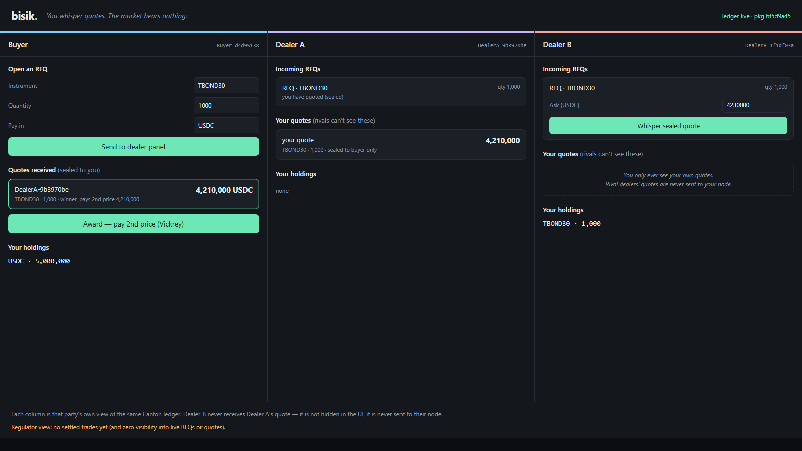

bisik.
bisik.
You whisper quotes. The market hears nothing.
A confidential multi-dealer RFQ desk for OTC block trades — native on Canton.
Build on Canton Hackathon · Private DeFi & Capital Markets · team “Diam” (named after our first build in the series below)
bisik.
The problem
You can’t trade size in the open.
- Post a $4M block on a public venue → the order and the competing bids leak.
- Front-running, market impact, leaked alpha the moment it hits the mempool.
- Today’s fix: OTC desks & chat rooms — trust a middleman, no clean audit trail.
- $30B+/month still trades this way.
bisik.
What Bisik is
A sealed-bid RFQ desk where the guarantees are code, not a middleman.
- Buyer requests quotes from a chosen dealer panel — the market never sees the RFQ.
- Each dealer’s quote is sealed — rival dealers never receive it.
- Cheapest ask wins, paid the second price (Vickrey) — atomic delivery-versus-payment.
- A regulator sees the executed trade — and only that.
Confidential pre-trade, auditable post-trade.
bisik.
The demo — one ledger, three views

Dealer A has whispered a quote. Dealer B’s column shows nothing — the quote was never sent to their node. Not hidden in the UI; never transmitted.
bisik.
How it works
RFQ buyer → invited dealers · no price on it
↓
SubmitQuote dealer locks the asset into escrow + seals a Quote
↓ (signatory: dealer + buyer · NO other observers)
Award cheapest ask wins, paid the 2nd price · atomic DvP
↓ cash → dealer + asset → buyer, both legs or neither
TradeReport regulator sees the settled trade — post-trade only
Privacy = Canton sub-transaction privacy. Pricing = the Vickrey rule computed in the Award choice. Settlement = atomic DvP.
bisik.
Why Canton — the differentiator
I built this exact desk four times before.
| Build | Chain | Privacy machinery I had to write |
|---|
| Diam | iExec Nox | TEE confidential compute |
| Segel | Stellar | two Groth16 ZK circuits, hand-rolled Poseidon |
| Sealed Pair | Sui | Walrus commitments + Seal encryption |
| Samar | Zama fhEVM | fully-homomorphic encryption |
| Bisik | Canton | none — it’s the ledger’s data model |
“Rivals can’t see the quote” is signatory/observer. ~40 lines of Daml replace thousands of lines of cryptography.
bisik.
Real-world fit
This is how OTC actually works.
- Multi-dealer RFQ is the Tradeweb / Bloomberg institutional workflow.
- Tradeweb is a Canton Super Validator — the workflow, native on the network they help run.
- Privacy guaranteed by the protocol; a regulator-observable audit trail.
- Maps directly to the track: “OTC trading workflows”, institutional relevance.
bisik.
Technical execution
Built, tested, and live.
- Clean two-package Daml — the deployable model DAR carries no test/script bloat.
- Escrow-backed atomic DvP; the reverse-Vickrey clearing is computed on-ledger in the
Award choice.
- 13 behavioural tests, incl. explicit privacy assertions (Dealer B cannot query Dealer A’s quote), issuer-binding, and the escrow-can’t-be-yanked guard.
- Web desk over the JSON Ledger API — award flow verified end-to-end.
- Agentic — an MCP server (an agent verifies Canton's privacy itself) + an autonomous market-maker that quotes RFQs blind. Private DeFi × agentic commerce.
- Deployed live on Canton Devnet (5N validator, Canton 3.5.7) — privacy proven on-ledger.
bisik.
Honest scope · roadmap
What’s next.
- Buyer-attested quote set; single-round, no partial fills today.
- Simple
Holding token → CIP-0056 token standard for wallet interop.
- MPC so the settler can’t see losing bids either.
- Multi-instrument panels, streaming RFQ.
bisik.
bisik.
The confidential OTC desk that finally didn’t need a cryptography stack — because Canton already is one.
live on Canton Devnet
github.com/PugarHuda/bisik
3-view live demo